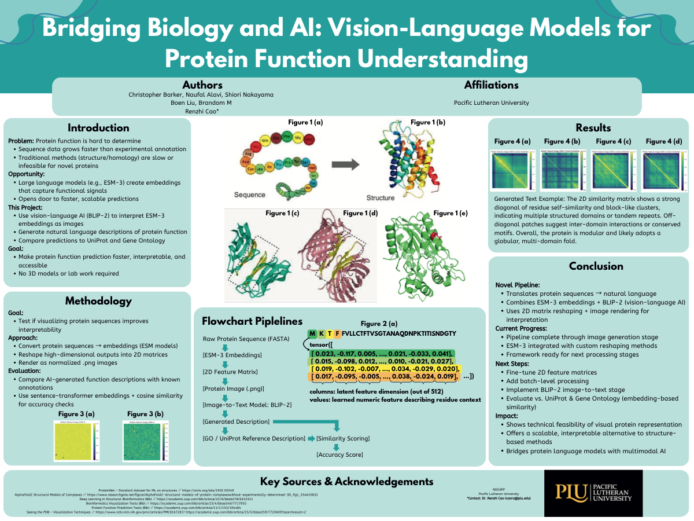
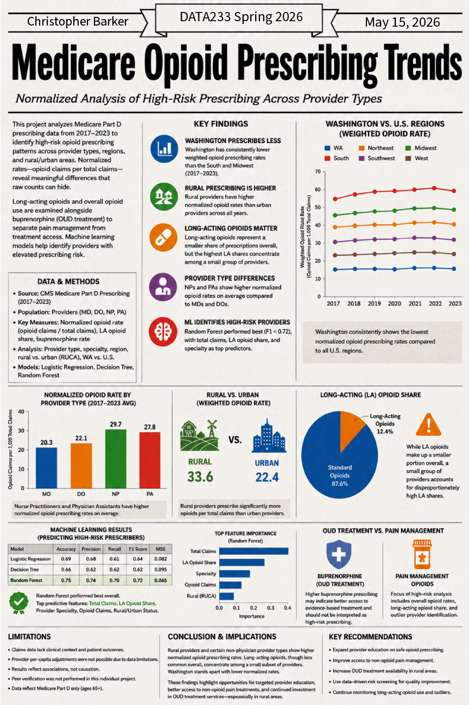
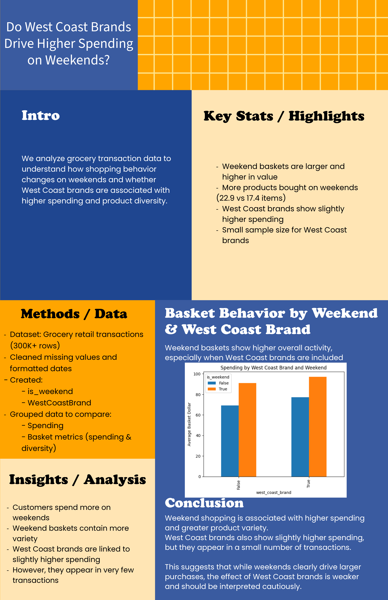
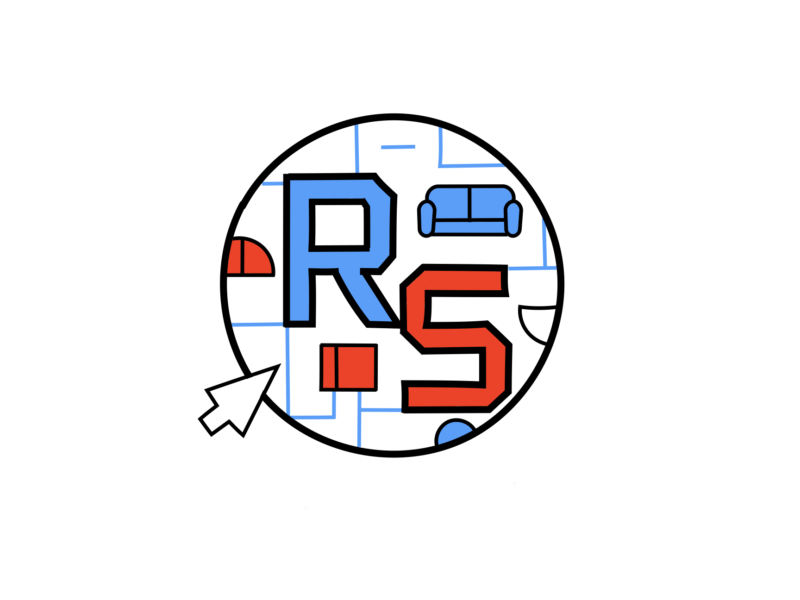
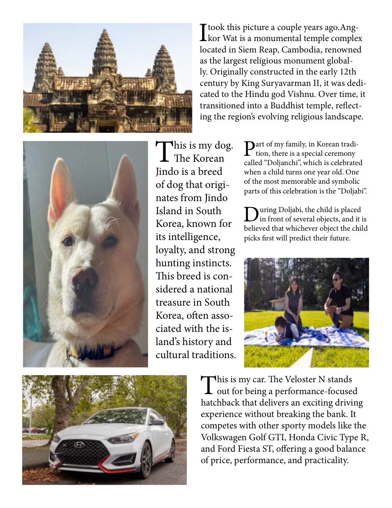
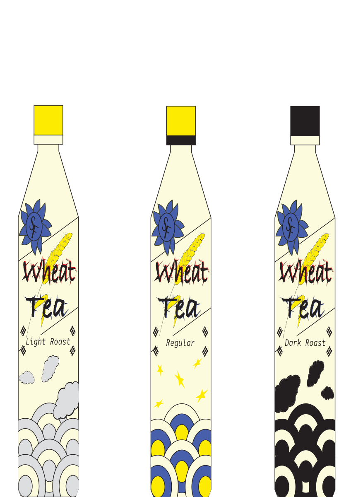
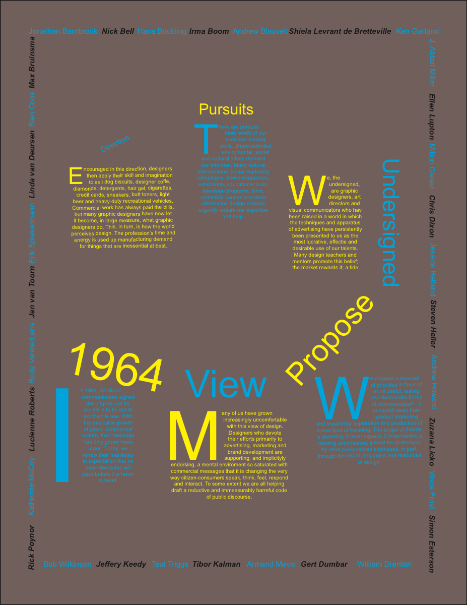
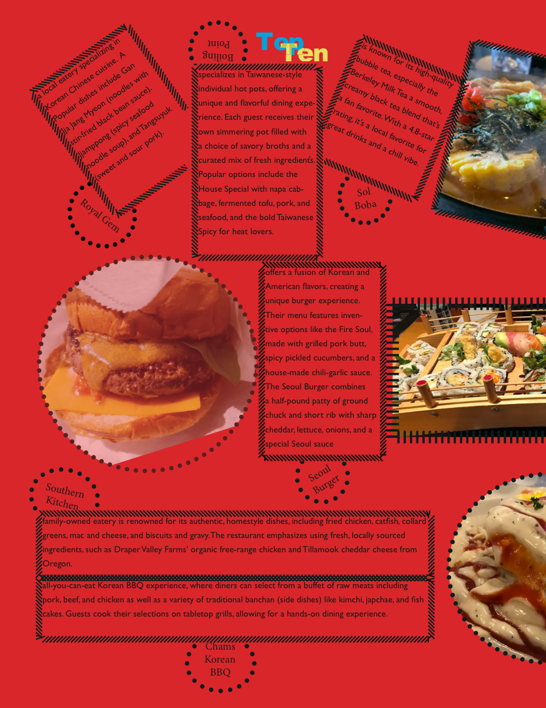
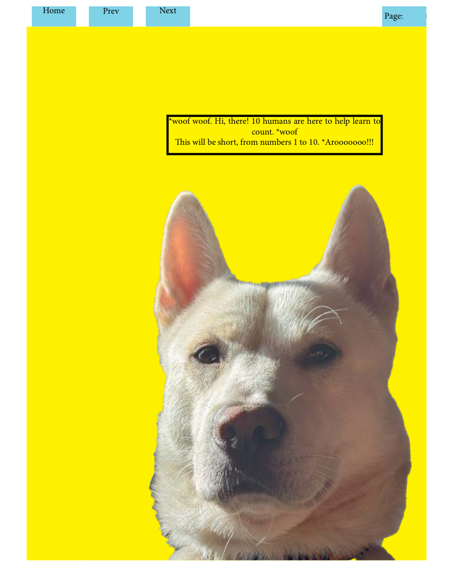

Projects
Featured scenes first.
Featured work appears at the top. Supporting work is included below as a compact archive so reviewers can keep moving without digging through a deep menu.
Featured projects
Featured Projects Reel
Curated primary work from the actual featured projects folder. The source directory is the constraint, so only projects with folders there appear in this reel.

Protein AI Pipeline
ESM-3 embeddings, BLIP-2 caption workflows, and GO similarity evaluation from the Cao Labs ChrisB workstream.

Opioid Prescribing Risk Analysis
Healthcare data and model interpretation.

Grocery Retail Consumer Analytics
Consumer data translated into retail insights.
Minesweeper Game
Tile-based browser game logic.
Battleship Game
Java game project with downloadable JAR and write-up.
HTML Resume Portfolio
Early web resume translated into a polished portfolio foundation.
AI Caption Generator
Vibe-based caption generation app.
GAN Discord Bot
Python bot project connecting image generation logic with Discord interaction.

Data Collaboration Room Studio
Studio consultation and capstone materials for collaborative technical space design.
Supporting projects
Supporting Work Reel
Secondary work from the supporting projects folder: design/media pieces first, followed by data studies, Java exercises, and Processing sketches.

Grid System Composition
Dynamic composition study using grid systems, spacing, and visual rhythm.

Package Series Design
Two-document package with final packaging artifact and presentation file.
SiDiYa Branding System
Personal identity system with emblem, typography studies, cultural symbolism, and website brand application.

Typography Poster Design
Visual design study focused on typography, hierarchy, and poster composition.

Favorite Things Magazine Spread
Editorial layout project using image, type, and publication design.

Interactive Number Learning Publication
Publication design focused on interactive visual learning.
Wang Center Collab Sticker
Collaborative sticker/visual communication piece from the supporting projects folder.
LLM Bias Detection Classifier
Python classifier experiment exploring bias-related language patterns.
Stock Market Visualization Analysis
R-based exploratory visualization and reporting.
CORGIS Predictive Data Analysis
Notebook and HTML analysis using public educational data.
Logistic Regression Analysis
Notebook-based statistical modeling and classification analysis.
Decision Tree Analysis
Notebook exploring decision-tree modeling and interpretable prediction logic.
Neural Network Analysis
Notebook study using neural-network methods for predictive modeling.
Multiple Regression Analysis
Notebook exploring multivariable relationships and regression interpretation.

CSCI 367 Game Systems
Collaborative PHP/JavaScript game project with auth, save/load, leaderboard, and gameplay systems.
Spelling Bee Puzzle
Java puzzle logic with validation and custom exception handling.
Mountain Terrain Pathfinding
Java pathfinding exercise for traversing terrain data.
Image Tool
Java image modification utility for basic pixel-level operations.
Abstract Art
Java drawing exercises using stars, nested squares, checkerboards, and canvas classes.
Regex Pattern Analyzer
Pattern-analysis assignment documented without deploying raw archive bundles.
Processing Visual Experiment
Creative coding sketch focused on simple visual experimentation.
Array Visualization Study
Processing sketch exploring arrays through visual structure.
Animal Function Animation
Processing animation exercise using functions and motion logic.
Random Circles Generator
Processing sketch generating randomized circular visual forms.

Animated Short Scene
Motion and animation study included as supporting visual communication work.
Community Documentary Media
Short film and anti-racist art exhibit project connected to Tacoma, civic interview context, and public exhibit work.
BJUG Day Campaign
YouTube-hosted campaign video presented as a polished supporting project page.
Complete inventory
Project Directory
Everything important gets a visible path here, so nobody has to click into a separate archive just to discover the full body of work.
Featured
Featured Project Folders
Data & AI
Supporting Data Studies
Code
Java & Processing
Design
Visual Communication
Media & Research
Documentary, Campaign, Animation, Research
Tracking